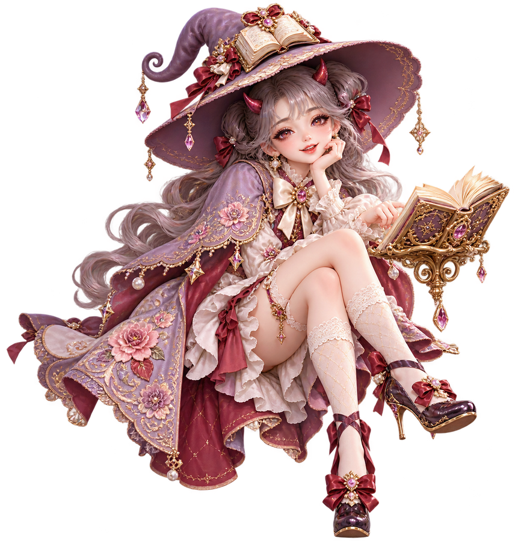
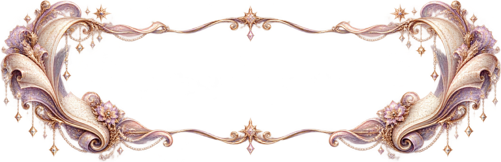

一番奥にある、ふるさと
小箱の奥にしまってあるのは、ふるさとの季節。山の見える町の景色は、いつでも心を温めてくれます。

このデザイン専用・読書の魔女
「なし」でキャラクターを隠せます。別のキャラクターは、対応するデザインで選べます。
人物・経歴はすべて架空です。装飾は生成イラスト、ご本人の写真は未提供の枠で示しています。
B02 思い出の小箱・読書の魔女
小箱の中には、私だけの宝物。

小箱の奥にしまってあるのは、ふるさとの季節。山の見える町の景色は、いつでも心を温めてくれます。
小さな花瓶の記憶。庭の花を瓶に飾るだけで、何でもない日が少し特別になりました。
交換した手紙、本の中の好きな言葉。気持ちを届ける楽しさを知った、学生時代の宝物です。
包むためのリボンには、仕事の思い出。お店では、品物と一緒に相手を思うひと言を添えていました。
形のない宝物は、家族との食卓の時間。楽しい話も困った話も、ともに聞いて過ごしました。
暮らしが変わるたび、小箱の中身も少しずつ増えてきました。新しい楽しみを、今も大切にしています。
身近な風景に囲まれて育つ。
人との出会いから、少しずつ世界が広がる。
その年の世の中：東京オリンピック開催 日本オリンピック委員会
目の前のことに向き合いながら歩む。
その年の世の中：大阪で日本万国博覧会開催 外務省
暮らしの中に、新しい楽しみを見つける。
その年の世の中：元号が平成から令和へ 内閣府
感謝と小さな希望を胸に、時を重ねる。
値札のつかない、大切なもの。
趣味・大切な品などの写真
ご提供後に差し込みます
布と針、飾る花、口ずさむ歌。値札では測れない、私の毎日を心地よくしてくれるものです。
温泉の町へ出かけた友人との記憶。迷って笑ったことまで、持ち帰りたい宝物になりました。
「使うのが楽しみ」と言われた、手作りの袋。相手を思って作った時間ごと、嬉しく覚えています。
形はなくても、支えは心に残ります。
箱にしまえない宝物もあります。話を聞いてくれた人の優しさは、今も私を支えています。
これからの宝物も、少しずつ。
散歩で見つける花、手帳のひと言、開きかけの本。今日も小さな宝物を、見つけながら暮らします。
これから小箱に加えたいのは、季節の庭の思い出と、大切な人へ書く手紙。まだ楽しみは尽きません。
宝物のそばには、いつも誰かがいました。声をかけ、笑い、見守ってくれた一人ひとりに、ありがとう。
あなたにも、好きなものを大切にしてほしいのです。嬉しいことは分け合い、困った時は声をかけてください。